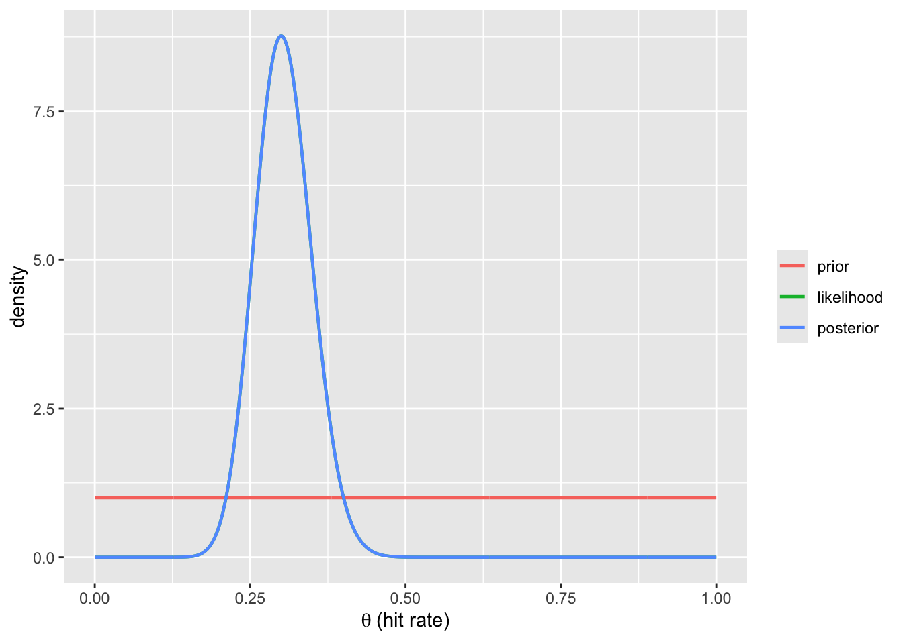

Show code
Pr_H1 <- 0.01
Pr_H2 <- 1 - Pr_H1
L_H1 <- 0.84
L_H2 <- 0.005
(Pr_infected <- (Pr_H1 * L_H1) / (Pr_H1 * L_H1 + Pr_H2 * L_H2))[1] 0.6292135The calculus chapter, Chapter 6, established the rules of probability, and Chapter 8 showed, through the weak syllogism, that observing a consequence raises the plausibility of its possible cause by a definite factor. This chapter turns that factor into the working tool of scientific inference. Bayes’ theorem is the machine that combines a prior belief with the evidence in the data to produce a posterior belief; the likelihood ratio is the part of that machine that measures evidence, and its logarithm — the weight of evidence — makes evidence additive, so that independent studies can be summed. The chapter closes on the point that does most of the damage in practice: the answer Bayes’ theorem returns depends on how the hypothesis space was sliced, and comparing data to a single hypothesis (the p value) cannot by itself favour any alternative.
Prior probability \(P(\text{Hypothesis} \vert I)\) is a purely logical term that incorporates all relevant evidence that is not present in the data. The separation of evidence into “data” and “prior” is a matter of convenience of calculation, nothing more. Every probability in this chapter is conditional on the background information \(I\) of Chapter 8; following custom, \(I\) is written once here and then suppressed from the notation, but it never leaves the inference — the prior is where most of it enters.
Likelihood \(P(\text{data} \vert \text{Hypothesis})\) models how probable the sample data are under each member of the hypothesis space \(\mathcal{H}\) of Chapter 8 — the list of explanations the analyst is prepared to entertain, as distinct from the sample space of possible data. If \(\mathcal{H} = \{H_1, H_2\}\), then the likelihood has two members as well: \(P(\text{data} \vert H_1)\) is the probability of seeing the sample data if it happens that \(H_1\) is true, and \(P(\text{data} \vert H_2)\) is the probability of seeing the sample data if it happens that \(H_2\) is true. If the likelihood ratio \(LR = \frac{P(\text{data} \vert H_1)}{P(\text{data} \vert H_2)} = 1\), then the data are irrelevant. \(LR = 10\) means that the data support \(H_1\) ten times more than \(H_2\).
The logarithm of the likelihood ratio is the weight of evidence, developed in its own section below.
The fact that the sample data provide much more evidence for \(H_1\) than for \(H_2\) does not by itself mean that we should think \(H_1\) more probable than \(H_2\), or than any other logically possible hypothesis. Likelihoods do not sum to one over the hypothesis space. Therefore likelihood is not a probability.
Posterior probability \(P(\text{Hypothesis} \vert \text{data})\) is the product of prior and likelihood for each member of the hypothesis space, normalised so that the probabilities sum to one over the hypothesis space. The posterior distribution is the output of Bayesian inference: the probability distribution that holds our beliefs about the parameter values, after the data.
We can derive Bayes’ theorem straight from the definition of conditional probability (Chapter 6),
\[P(A\vert B) = \frac{P(A \land B)}{P(B)},\]
and equivalently \[P(B\vert A) = \frac{P(B \land A)}{P(A)}.\]
As \(P(A \land B) = P(B \land A)\),
\[P(A\vert B)\,P(B) = P(B\vert A)\,P(A),\] and so
\[P(A\vert B) =\frac{P(A)\,P(B\vert A)}{P(B)}.\] This is Bayes’ theorem. Now let us substitute hypothesis \(H\) for \(A\) and data \(d\) for \(B\):
\[P(H \vert d) =\frac{P(H)\,P(d\vert H)}{P(d)}.\] Here \(P(H\vert d)\) is the posterior, \(P(H)\) is the prior probability of the hypothesis, \(P(d\vert H)\) is the likelihood (the probability of the data given the hypothesis), and \(P(d)\) is the total probability of the data, summed over all the hypotheses in the hypothesis space. \(P(d)\) is the normalising constant, which guarantees that the posterior probabilities sum to one over the hypothesis space.
The single most important thing to remember is that the posterior is proportional to the product of prior and likelihood.
What does \(P(d)\) really mean? If \(\mathcal{H} = \{H, \lnot H \}\), then
\[P(d) = P(d \land H) + P(d \land \lnot H) = P(H)P(d\vert H) + P(\lnot H)P(d\vert \lnot H),\]
where the final step comes from the definition of conditional probability.
The normalising constant \(P(d)\) is the same for every hypothesis in the hypothesis space, which is the source of a great simplification. Write Bayes’ theorem for two hypotheses, \(H_1\) and \(H_2\), and divide one by the other. The \(P(d)\) cancels:
\[\underbrace{\frac{P(H_1\vert d)}{P(H_2\vert d)}}_{\text{posterior odds}} = \underbrace{\frac{P(H_1)}{P(H_2)}}_{\text{prior odds}} \times \underbrace{\frac{P(d\vert H_1)}{P(d\vert H_2)}}_{\text{likelihood ratio}}.\]
In words: posterior odds = prior odds × likelihood ratio. This is Bayes’ theorem in its most useful form. It separates cleanly into the two ingredients of an inference — the prior odds, which carry everything known before the data, and the likelihood ratio, which carries everything the data contribute. The likelihood ratio (for two simple hypotheses, the Bayes factor) is the multiplicative factor by which the data shift the odds. It is the quantitative form of the weak syllogism from Chapter 8: evidence is not “for” a hypothesis in isolation but always relative to a named alternative.
Three consequences follow immediately, and each is a recurring theme of the book:
Multiplying odds across several independent pieces of evidence is awkward. Taking logarithms turns the product into a sum. Define the weight of evidence as the logarithm of the likelihood ratio,
\[W = \log \frac{P(d\vert H_1)}{P(d\vert H_2)},\]
so that Bayes’ theorem in odds form becomes additive:
\[\log(\text{posterior odds}) = \log(\text{prior odds}) + W.\]
Evidence now behaves like a physical quantity that accumulates: two independent experiments contribute weights \(W_1\) and \(W_2\), and the total evidence is \(W_1 + W_2\). This formulation, and the term “weight of evidence”, are due to I. J. Good, building on wartime work with Alan Turing; in base-ten logarithms the unit is the ban, and one tenth of a ban is the deciban, the smallest change in the plausibility of a hypothesis a person can reasonably perceive.1 Positive weight favours \(H_1\), negative weight favours \(H_2\), and zero weight (likelihood ratio 1) is data that cannot tell the two hypotheses apart — a case that returns, decisively, in the Madame Marie example below. The weight of evidence is also what makes “informative” precise in the card-selection task of Chapter 3: the observation worth making is the one whose expected weight of evidence, averaged over what it might show, is largest.
(The numbers are of the kind reported for the first antibody tests in the spring of 2020.) We have an antibody test for COVID-19. If 1000 COVID-19 positive patients are tested, on average 840 of them get a true-positive result (sensitivity 84%). If 1000 non-infected people are tested, 5 get a false-positive result (specificity \(1 - 0.005 = 0.995\), or 99.5%). About 1% of the population has been exposed to the virus. If a random person tests positive, what is the probability that this person is infected?
Pr_H1 <- 0.01
Pr_H2 <- 1 - Pr_H1
L_H1 <- 0.84
L_H2 <- 0.005
(Pr_infected <- (Pr_H1 * L_H1) / (Pr_H1 * L_H1 + Pr_H2 * L_H2))[1] 0.6292135The odds form makes the same calculation transparent. The prior odds of infection are \(0.01 / 0.99 \approx 1\!:\!99\). The likelihood ratio of a positive test — the diagnostic likelihood ratio — is sensitivity over one-minus-specificity:
prior_odds <- Pr_H1 / Pr_H2
LR_pos <- L_H1 / L_H2 # = 0.84 / 0.005
post_odds <- prior_odds * LR_pos
c(LR = LR_pos, weight_of_evidence_bans = log10(LR_pos),
posterior_odds = post_odds,
posterior_prob = post_odds / (1 + post_odds)) LR weight_of_evidence_bans posterior_odds
168.0000000 2.2253093 1.6969697
posterior_prob
0.6292135 A positive result carries a likelihood ratio of 168 — strong evidence, 2.2 bans. Yet because the prior odds are so low (the disease is rare), the posterior probability of infection is only 0.63: the strong evidence multiplies a small prior. This is the base-rate point of Chapter 2, now quantified, and it is also the diagnostic exercise of Chapter 3 completed: with sensitivity 1 a negative test would refute infection outright by the strong syllogism, while with sensitivity 0.84 a positive test only raises its plausibility, by a factor the likelihood ratio now states.
There is a more intuitive route to the same number. Imagine 1000 random persons, 10 of whom are infected and 990 not. Of the infected, \(10 \times 0.84 = 8.4\) test positive; of the uninfected, \(990 \times 0.005 = 5\) test positive. The probability of being infected given a positive test is then \(8.4 / (8.4 + 5) = 0.63\).
The Infectious Diseases Society of America made the practical version of this point in its 2020 guideline on antibody testing.2 Population surveys should use “assays with high specificity (ie, ≥99.5%)”, above all where prevalence is expected to be low, because with an IgA assay of the day and a prevalence of 1%, the panel calculated that about nine in ten positive results would be false positives; and testing individuals was recommended only where clinical suspicion was already high — that is, where the prior odds were no longer small. A rare condition demands a very high likelihood ratio before a positive result means much for an individual.
The previous chapter, Chapter 8, introduced the hypothesis space and showed, with a trick coin, that the same data can support opposite headline conclusions in different spaces. This example develops that point with the full odds-form machinery, on a question with a longer pedigree.
Suppose we want to find out whether Madame Marie has extra-sensory perception (ESP). We use a deck of cards bearing one of five symbols, so that pure guessing succeeds with probability \(0.2\), and we record her guesses on \(n = 100\) cards. She gets \(k = 30\) correct — well above the 20 expected by chance.
A frequentist analysis compares this with the hypothesis of pure guessing alone and reports a small p value: 30 or more correct is unlikely if she were guessing at random.
n <- 100; k <- 30
p_value <- pbinom(k - 1, n, 0.2, lower.tail = FALSE) # P(X >= 30 | random)
p_value[1] 0.01124898The data are indeed inconsistent with pure randomness. But “inconsistent with randomness” is not “evidence for ESP”, because the p value addresses only one hypothesis. Bayes’ theorem forces us to name the alternatives and their likelihoods. Consider three:
The likelihoods are binomial (Chapter 7), and the two analyses — the naive two-hypothesis space \(\{H_1, H_2\}\) and the fuller \(\{H_1, H_2, H_3\}\) — differ only in which hypotheses are admitted and what priors they carry:
L1 <- dbinom(k, n, 0.30) # ESP
L2 <- dbinom(k, n, 0.20) # random
L3 <- dbinom(k, n, 0.30) # bias: same hit rate as ESP
## Naive two-hypothesis space, generously agnostic between ESP and chance
prior2 <- c(ESP = 0.5, random = 0.5)
post2 <- prior2 * c(L1, L2)
post2 <- post2 / sum(post2)
## Fuller space: ESP a priori near-impossible; bias as plausible as chance
prior3 <- c(ESP = 1e-6, random = 0.5, bias = 0.5 - 1e-6)
post3 <- prior3 * c(L1, L2, L3)
post3 <- post3 / sum(post3)
list(LR_ESP_vs_random = L1 / L2,
LR_ESP_vs_bias = L1 / L3,
posterior_2hyp = round(post2, 4),
posterior_3hyp_ESP = signif(post3["ESP"], 3))$LR_ESP_vs_random
[1] 16.72251
$LR_ESP_vs_bias
[1] 1
$posterior_2hyp
ESP random
0.9436 0.0564
$posterior_3hyp_ESP
ESP
1.89e-06 Two things stand out. First, the likelihood ratio of ESP against random guessing is large, so in the naive two-hypothesis space the posterior probability of ESP comes out high — 0.94 — the same impression the small p value gives. Second, the likelihood ratio of ESP against bias is exactly 1: the data fit fraud precisely as well as they fit ESP, and so provide no evidence whatever to choose between them. Once \(H_3\) is admitted — and bias is, a priori, vastly more plausible than ESP — the posterior probability of ESP collapses to \(1.9 \times 10^{-6}\). It has barely moved from its prior of \(10^{-6}\): the data did discredit random guessing, and ESP inherits a sliver of the mass that guessing lost, but almost all of it goes to bias, which the data cannot tell from ESP. The data never bore on the question that matters.
The same data, the same likelihoods for ESP, two opposite conclusions: the difference is entirely in how the hypothesis space was sliced. This is the practical lesson. A p value, comparing the data with a single null, can reject “pure randomness” while saying nothing about ESP versus bias — which is the comparison a scientist actually cares about. Evidence is comparative, and a relevant hypothesis left out of the space can invalidate the whole inference.
More generally, for a hypothesis space with \(n\) mutually exclusive and exhaustive hypotheses \(\mathcal{H} = \{H_1, H_2, \dots, H_n\}\),
\[P(d) = P(H_1)P(d\vert H_1) + P(H_2)P(d\vert H_2) + \dots + P(H_n)P(d\vert H_n).\]
This is the formula for total (a.k.a. marginal) probability, and Bayes’ theorem becomes
\[P(H_1\vert d) =\frac{P(H_1)P(d\vert H_1)}{P(H_1)P(d\vert H_1) + P(H_2)P(d \vert H_2) + \dots + P(H_n)P(d \vert H_n)}.\]
What if we want to estimate a continuous parameter — Madame Marie’s true hit rate \(\theta\), the probability that a patient dies of COVID-19, the mean length of a hospital stay? Then the hypothesis space has infinitely many members (every real number from 0 to 1, say), and the prior and the likelihood must be specified for all of them at once. Continuous functions do this: prior and likelihood become probability distributions of the kind catalogued in Chapter 7, the sum in the denominator becomes an integral, and the posterior is a continuous distribution too.
The cleanest case is the beta–binomial conjugacy promised in Chapter 7. Take Marie’s hit rate \(\theta\) as the unknown, put a uniform \(\text{Beta}(1,1)\) prior on it — every hit rate equally plausible before the cards are turned — and use the binomial likelihood of 30 hits in 100. Multiplying a \(\text{Beta}(\alpha,\beta)\) prior by a binomial likelihood with \(s\) successes and \(f\) failures gives a \(\text{Beta}(\alpha+s,\beta+f)\) posterior, with no integral to compute (Figure 9.1).
theta <- seq(0, 1, by = 0.001)
a0 <- 1; b0 <- 1 # uniform prior
post_a <- a0 + k; post_b <- b0 + (n - k) # conjugate update
lik <- dbinom(k, n, theta)
lik <- lik / max(lik) * max(dbeta(theta, post_a, post_b))
tibble(theta,
prior = dbeta(theta, a0, b0),
likelihood = lik,
posterior = dbeta(theta, post_a, post_b)) %>%
pivot_longer(-theta) %>%
mutate(name = factor(name, levels = c("prior", "likelihood", "posterior"))) %>%
ggplot(aes(theta, value, colour = name)) +
geom_line(linewidth = 0.8) +
labs(x = expression(theta ~ "(hit rate)"), y = "density", colour = NULL)
The posterior is \(\text{Beta}(31, 71)\): its mean is 0.30, and 95% of its mass lies between 0.22 and 0.40 — the interval summary that Chapter 10 names the credible interval and develops. Notice what this analysis does and does not say. It estimates how often Marie hits, and finds the rate well above 0.2; it is silent on why, because a hit rate is not a hypothesis about ESP versus bias. The continuous parameter has replaced the discrete hypothesis space, and the question the three-hypothesis space made explicit has disappeared back into the choice of what to model. When no conjugate shortcut exists, the posterior is obtained numerically; the grid approximation of Chapter 10 is the most direct method, and Markov chain Monte Carlo (Section 23.2.2) the general one.
Bayes’ theorem combines, in the logically optimal way, the evidence in the data (through the likelihood) with the data-independent beliefs (through the prior), and returns a posterior. There is no magic involved, just probability theory. Bayes’ theorem is not a truth machine — it combines the information put into it. If the prior or the likelihood is grossly wrong, there is no guarantee that the posterior converges on the truth, even in the long run (although under most realistic conditions it does).
Two practical properties follow. First, the theorem works iteratively, and with no lower limit on the data: \(N = 1\) is fine.3 Yesterday’s posterior becomes today’s prior, new data enter as a new likelihood, and the updated posterior in turn becomes tomorrow’s prior; because the product rule does not care how the data are grouped, updating on a hundred observations one at a time gives the same posterior as updating on all hundred at once. Bayesian inference thereby recapitulates the piecemeal nature of scientific inference, and because evidence is additive on the log scale (the weight-of-evidence section), accumulating studies is addition. One consequence is that nothing stops an analyst computing the posterior after every new observation. The frequentist concern with stopping rules arises from the need to control long-run error rates and has no counterpart here — a contrast that Chapter 10 opens with and the significance-chasing section of Appendix G spells out.
Second, the data need not be independent draws from a fixed population. What the analysis requires is that they be exchangeable: that the joint probability of the observations be unchanged by reordering them, so that their order carries no information (Chapter 8). De Finetti’s representation theorem, met in that chapter, is what makes exchangeability enough: an exchangeable sequence is mathematically a sequence that is independent and identically distributed (iid; independence was defined in Chapter 6) given an unknown parameter, with a prior over that parameter — exactly the structure prior × likelihood assumes. The iid assumption of a frequentist analysis and the exchangeability judgement of a Bayesian one are therefore the same judgement about the data, made unconditionally in the first case and conditionally on the parameter in the second; what the Bayesian gains is the freedom to put a distribution on the unknown rather than treat it as fixed. Where the observations are not exchangeable — measurements ordered in time, patients clustered within hospitals — the model must say how they depend on one another, which is the work of Part V.
The theorem is in hand, in three forms: the direct form, the odds form, and the additive log form. What it has not yet done is compute a posterior that no conjugate pair hands over for free; Chapter 10 does that with the grid approximation, and states the credible interval that this chapter’s beta–binomial example only gestured at. The p value, which this chapter used only as a foil, is set out with its problems in Appendix G. And the point on which everything here has turned — that evidence is comparative, and that a hypothesis left out of the space cannot be revived by any data — returns in Part III, where the hypotheses are causal structures and the omitted one is usually a confounder.
Odds form by hand. Repeat the diagnostic-test calculation for a population where the base rate is 10% rather than 1%, keeping the same sensitivity and specificity. Compute the posterior probability of infection both ways (direct Bayes and odds form), and report the weight of evidence of a positive test in bans. Why does the posterior change even though the likelihood ratio does not?
Evidence adds up. A patient takes the antibody test twice, independently, and both results are positive. Using the weight-of- evidence formula, add the two weights and convert back to a posterior probability (start from the 1% prior). Confirm the result by applying Bayes’ theorem twice, using the first posterior as the second prior.
Re-slice the deck. In the Madame Marie code, change Marie’s score to \(k = 45\) and re-run both analyses. Does the larger likelihood ratio against randomness change the three-hypothesis conclusion about ESP? Explain why or why not in terms of the likelihood ratio of ESP against bias.
Make bias implausible. Suppose the experiment is run under conditions that make fraud and cueing nearly impossible, so that the prior on \(H_3\) falls to \(10^{-4}\) while the prior on ESP stays at \(10^{-6}\). Recompute the three-hypothesis posterior for ESP. What does this tell you about where the real work of an ESP experiment lies — in the data or in the design?
From the cohort. Source R/simulate_cohort.R and generate the cohort. Estimate the stroke risk among treated and untreated patients, \(P(\text{stroke}\vert\text{drug})\) and \(P(\text{stroke}\vert\lnot\text{drug})\), by counting. Treat these as likelihoods and take a prior of 0.5 that a randomly chosen patient was treated; update on “this patient had a stroke” to obtain \(P(\text{drug}\vert\text{stroke})\). Explain why this posterior is an associational quantity and must not be read as the effect of the drug (Chapter 4 and Chapter 11).
Conceptual: the single null. A colleague reports “p = 0.001, so the effect is real.” Using the odds form and the ESP example, explain in a short paragraph what is missing from this inference and what additional quantities would be needed to make it.
A sceptical conjugate prior. Repeat the beta–binomial update of Marie’s hit rate with a \(\text{Beta}(4, 16)\) prior, which is centred on the chance rate of 0.2 and worth about 20 cards of information. Compare the two posteriors’ means and 95% intervals. How many cards, at the observed hit rate of 0.3, would it take before the uniform and the sceptical prior give posterior means within 0.01 of each other?
Good IJ, Probability and the Weighing of Evidence, London: Charles Griffin, 1950.↩︎
Hanson KE, Caliendo AM, Arias CA, et al., “Infectious Diseases Society of America guidelines on the diagnosis of COVID-19: serologic testing,” Clin Infect Dis 2020;ciaa1343 (DOI).↩︎
Many frequentist procedures rest on large-sample approximations (the central limit theorem of Chapter 7) and need a minimum \(N\) before they behave as advertised; the posterior is exact at any \(N\), though at \(N = 1\) it is mostly the prior.↩︎